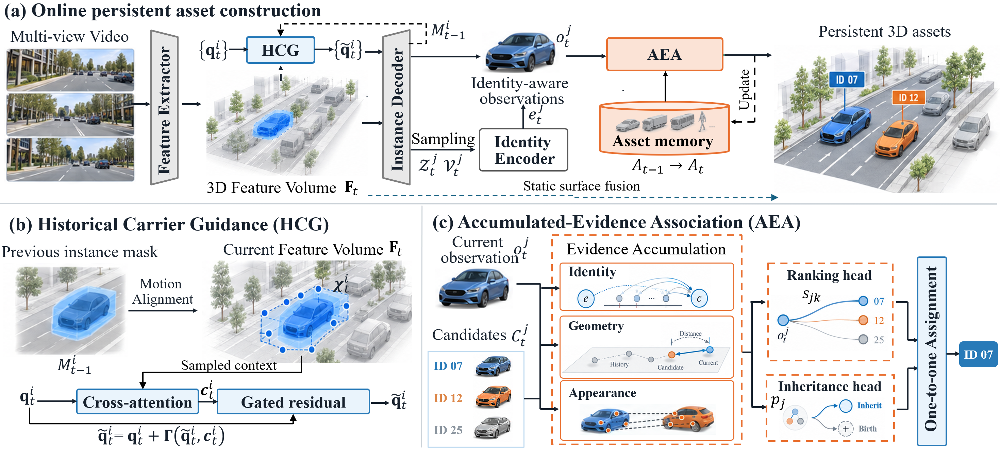
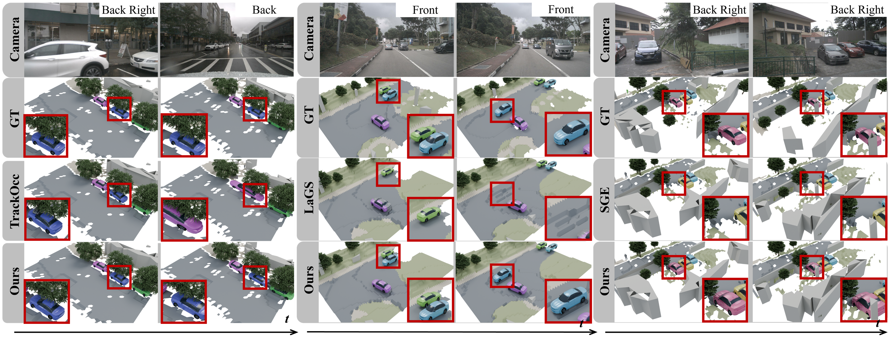

Problem Setup
01 · From Multi-View Video to Persistent Objects
Video2Asset 面向在线 street-scene asset construction：多摄像头视频持续到来，系统要把车辆、行人或其他实例变成可以单独编辑的 3D asset。难点不是单帧分割，而是对象在遮挡、运动和视角变化后重新出现时，仍保持同一个 ID，并避免把相邻对象的证据混在一起。
输入是带相机标定与位姿的多视图图像，输出是带 world-coordinate 状态的 asset records 和 occupancy-derived static background。每个记录可用于 mesh replacement、object deletion 或 trajectory editing；因此 identity continuity 是表示的一部分，而不是渲染后的附加标签。
Method
02 · Historical Carrier Guidance and Identity Features

Zihan Zheng et al. · Original figure, unmodified · arXiv license · Paper & Caption ↗
occupancy backbone 先把多视图图像转成 3D occupancy features 和实例候选。Historical Carrier Guidance（HCG）把上一时刻的 instance mask 依据运动与相机变换对齐到当前视图，作为 object-specific spatial support；它使 query 不必只从当前帧重新寻找对象。
identity encoder 将 mask-aligned 3D feature 与多视图 appearance 融合成可比较的 observation embedding。HCG 解决“当前观测不完整时从哪里聚合特征”，identity encoder 解决“当前 observation 与历史记录是否像同一实例”；二者不是同一个模块，也不应把 mask 对齐直接当作身份确认。
Mechanism
03 · Accumulated-Evidence Association
AEA 为每个当前 observation 检索候选 asset，并分别读取三种历史证据：identity 比较 learned embedding，geometry 比较世界坐标位置、尺寸与运动，appearance 比较有效视图中的外观。它保留多个历史 observation，而不是只保留最近一次，从而在短时遮挡或视角变化时仍有可用证据。
对于 observation j 和候选 k，可以把配对得分写成 s_jk=Σ_b f_b(r_jk^b)，其中 b 属于 identity、geometry、appearance；另一个 Birth/Inherit 分类器 p_j 决定是否应该继承任意旧 ID。先排名候选、再判断是否继承，避免“最像某个候选”被误解释成“必然是旧对象”。最后用 greedy one-to-one assignment 防止同一帧两个 observations 夺取同一 asset。
Training and Inference
04 · Training and Online Update
训练分阶段进行：先训练 occupancy 与 HCG，再冻结 perception 训练 identity encoder，最后冻结 observation construction 训练 AEA。association training 先用 ground-truth assignments 构建历史，随后切换到模型自己预测的 links，让后续决策看到模型早期错误会造成的记录。推理时 asset memory 从空开始，在独立序列之间 reset。
被继承的 observation 更新 world-coordinate asset state；Birth observation 创建新记录。静态背景独立由 occupancy 生成，类别 asset library 提供可编辑 mesh。这个设计让 object-level 操作简单，但也限定了输出：mesh 的细节来自类别库，而不是从所有观测恢复出每个实例的完整真实形状。
Evidence
05 · Datasets, Ablations, and Results

Zihan Zheng et al. · Original figure, unmodified · arXiv license · Paper & Caption ↗
实验使用 CarlaOcc（104 个合成序列、每段 1,000 帧、6 个环视相机）、nuScenes（1,000 个真实场景、6 相机）和 Waymo（1,150 个真实场景、5 相机）。occupancy backbone 分别为 TrackOcc、LaGS 和 SGE，评估 observation quality、temporal identity consistency、asset quality 以及低可见性下的 asset fragmentation（AF）。
作者报告 TrackOcc 在 CarlaOcc 上 HOTA 从 11.25 提高到 25.99、IDF1 从 7.24 提高到 24.59；nuScenes 上 SGE 的 AF 从 0.26 降到 0.22，摘要将其概括为 15.4% reduction。低可见性 nuScenes 子集把 0–40% visibility 的连续区间与前后 80–100% 区间配对，SGE 的 AF 从 2.48 降低 0.09。HCG 与 AEA 消融都能降低碎片，说明当前证据构建和历史关联分别有作用。
Discussion
06 · Relation to Semantic-Geometric Memory
Video2Asset 对 LingBot-Map 的启发很直接：语义实例不应只是 map 上的一层颜色，而可以成为带 identity、geometry、appearance 和 visibility 的长期记录。写入前先形成 object-aware observation，再由多源证据决定 inherit、birth 或暂缓写入，能把“语义帮助 memory 关联”的作用拆成可测的机制。
但 Video2Asset 使用 occupancy 和相机标定的 street-scene 设置，输出是可编辑 asset，不是 LingBot-Map 的 dense depth/pose。把 HCG 或 AEA 迁移到流式重建时，需要保留几何边界和不确定性，防止同类物体被错误合并；实验应固定 memory 容量，比较几何-only、语义-only 和 semantic+geometric association，并同时评估深度、轨迹、实例一致性、完整度和延迟。
Discussion
Reading Questions
Why keep multiple historical observations per asset?
单个最近 observation 可能被遮挡、视角偏置或错误检测污染；多条 identity、geometry、appearance 证据让关联可以选择与当前 observation 最相容的历史。
Does an inherited ID guarantee correct geometry?
不保证。ID 关联只决定记录归属，asset mesh 仍来自类别库，位置和姿态还受 occupancy 与 world-coordinate 状态影响。
What is the role of HCG versus AEA?
HCG 改善当前 observation 的实例特征聚合；AEA 在 observation 已形成后读取历史并决定 Birth/Inherit 与具体匹配。
What transfers to LingBot-Map?
可迁移的是语义、外观、几何和可见性共同控制 memory 写入；street-scene occupancy、类别 mesh 和 15.4% 数字不能直接外推到 RGB 流式重建。
References
First submitted 2026-11-06. Read 2611.09661v1 on 19 November 2026. Two original figures are reproduced from the arXiv HTML under the paper's stated arXiv license. Experimental results are reported by the authors and have not been independently reproduced.
Verified on 2026-11-19. Paper results refer to the linked versions. Repository references were checked on this date.